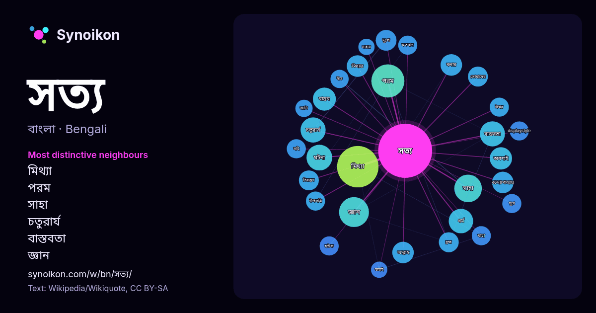

বাংলা · জনপ্রিয় শব্দ
সত্য
“truth” · উইকিপিডিয়া, Wikiquote থেকে 1295টি প্রয়োগে এর চারপাশে পাওয়া শব্দ।

সবচেয়ে স্বতন্ত্র প্রতিবেশী
- মিথ্যা 40×
- পরম 27×
- সাহা 21×
- চতুরার্য 19×
- বাস্তবতা 18×
- জ্ঞান 15×
- মিথ্যার 15×
- বন্দ্যোপাধ্যায় 13×
- চিরন্তন 12×
- বলার 12×
- ব্রহ্ম 12×
- বাস্তব 12×
- displaystyle 12×
- হউক 12×
- দুঃখ 12×
- যাহা 11×
- সাই 11×
- তোমাদের 11×
- আল্লাহ 11×
- গীত 9.6×
× = সাধারণ উইকিপিডিয়া টেক্সটের চেয়ে কত গুণ বেশি।
সবচেয়ে ঘন ঘন প্রতিবেশী
- মিথ্যা 52
- কথা 43
- পরম 33
- জ্ঞান 27
- সাহা 23
- সম্পর্কে 22
- ঘটনা 20
- চতুরার্য 19
- বাস্তবতা 19
- চলচ্চিত্র 18
- ধর্ম 18
- একজন 17
- প্রমাণ 17
- বিশ্বাস 17
- দ্বিতীয় 16
- পরিচালনা 16
- বাস্তব 16
- মানুষ 16
- অবশ্যই 15
- মানুষের 15
প্রসঙ্গে
- হয়। অর্ধ-সত্য বিষয়ে সত্য-মিথ্যার সংমিশ্রণ থাকে অথবা কিছু সত্য বিষয় তুলে ধরা হলেও পূর্ণাঙ্গ বিষয়টি উপস্থাপন করা হয় না। যদি কোন কিছুকে সত্য বলা হয় তখন Wikipedia snippets · সত্য
- সত্য (সংস্কৃত: सत्य) সংস্কৃত শব্দ যাকে আলগাভাবে সত্য, সারাংশ হিসাবে অনুবাদ করা হয়। এটি ভারতীয় ধর্মে একটি গুণকেও নির্দেশ করে, যার দ্বারা চিন্তা, বাক্য Wikipedia snippets · সত্য (গুণ)
- করতেন। সত্য সাই ও তার সংগঠন ভারতে ও ভারতের বাইরে একাধিক শিক্ষাপ্রতিষ্ঠান, হাসপাতাল ও অন্যান্য দাতব্য সংস্থা চালাতেন। ১৯৯৯ সালের একটি হিসেব অনুযায়ী, সত্য সাইয়ের Wikipedia snippets · সত্য সাই
- চতুরার্য সত্য তত্ত্বে দুঃখ সম্বন্ধে আলোচনা করা হয়েছে। এই চারটি সত্য হল দুঃখ, দুঃখ সমুদয়, দুঃখ নিরোধ ও দুঃখ নিরোধ মার্গ। চতুরার্য সত্যের প্রথম সত্য হল দুঃখ। Wikipedia snippets · চতুরার্য সত্য
- বাস্তব সত্য বা স্বীকৃত সত্য (ইংরেজি: Fact ফ্যাক্ট্) হচ্ছে এমন বিষয়সমূহ যেটা প্রকৃতপক্ষে বা বাস্তবে ঘটছে বা যা মূল ঘটনা বা সঠিক ঘটনা। কোন বিষয়ের বাস্তব Wikipedia snippets · বাস্তব সত্য
- তিনশো নাটকে অভিনয় করেছেন। 'কুহেলি' ছবিতে যে সত্য বন্দ্যোপাধ্যায় অভিনয় করেছেন তিনি অন্য ব্যক্তি। সত্য বন্দ্যোপাধ্যায়ের জন্ম ১৯৩৩ খ্রিস্টাব্দের ২৫ সেপ্টেম্বর Wikipedia snippets · সত্য বন্দ্যোপাধ্যায় (অভিনেতা)
- প্রথম ছায়াছবি সুতরাং থেকে সত্য সাহার সঙ্গীত পরিচালক হিসেবে যাত্রা শুরু। বাংলা ছায়াছবির জনপ্রিয় নায়িকা কবরীর ছবিতে আগমন সত্য সাহার হাত ধরে। পরিচালক সুভাষ Wikipedia snippets · সত্য সাহা
- পবিত্র প্রেরণার মাধ্যমে স্থাপিত ট্রু জিসাস চার্চ বা সত্য যীশু গির্জা হল প্রচারকত্ব সময়ের পুনর্স্থাপিত সত্য গির্জা"। "যীশুর দ্বিতীয় আগমন ঘটবে চূড়ান্ত দিনে Wikipedia snippets · সত্য যীশু গির্জা
আরও শব্দ
- অরণ্য
- আয়না
- ইতিহাস
- ঈশ্বর
- কাজ
- কুকুর
- ক্ষমতা
- খাদ্য
- গান
- গ্রীষ্ম
- ঘড়ি
- ঘণ্টা
- ঘোড়া
- ছায়া
- জননী
- জলবায়ু
- জীবন
- ঝড়
- টাকা
- ট্রেন
- দারুচিনি
- দ্বীপ
- নক্ষত্র
- নীরবতা
- পরিবার
- পানি
- পাহাড়
- প্রকৃতি
- বাগান
- বিজ্ঞান
- বিড়াল
- বৃষ্টি
- ভাষা
- মধু
- মরুভূমি
- মানচিত্র
- মৃত্যু
- রাস্তা
- রুটি
- লবণ
- শরৎ
- শহর
- শিল্প
- শীত
- সময়
- সেতু
- সোনা
- স্বাস্থ্য
- হৃদয়
2026-10-09 তারিখে ডিফল্ট সেটিংসে (±5 শব্দ, মাঝারি কর্পাস) আগে থেকে গণনা করা। ইন্টারঅ্যাক্টিভ মানচিত্র লাইভ ডেটা দিয়ে এটি হালনাগাদ করতে পারে।
যন্ত্রে অনূদিত ইন্টারফেস; সংশোধন স্বাগত।